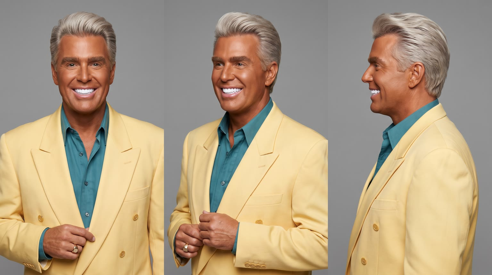
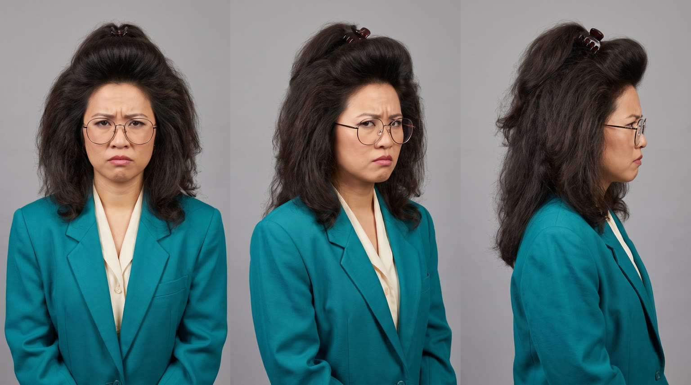
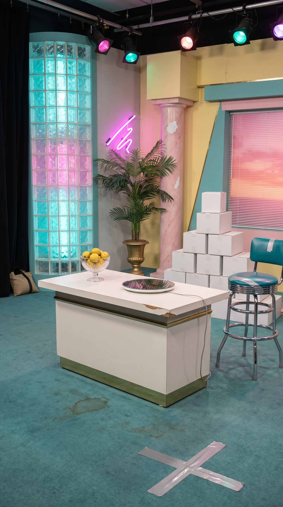
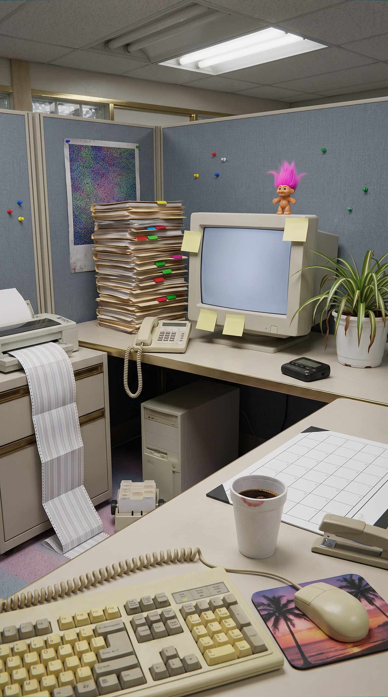
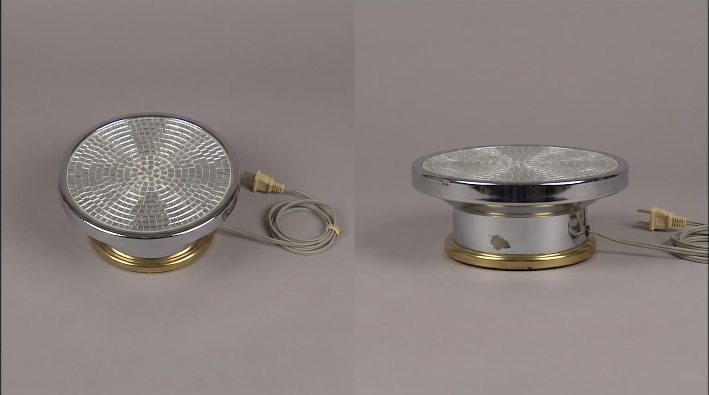
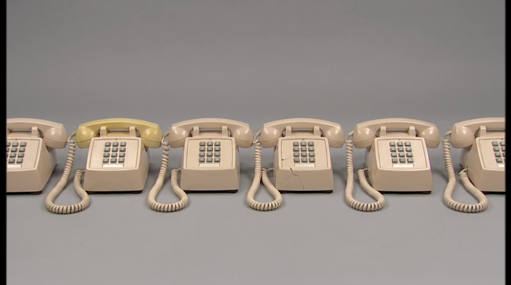

All templates · template.json · original storyboard
Retro VHS infomercial parodyretro_infomercial-01-slump-busterThe Better Way
Found on a 1997 tape: the host of a late-night home shopping show has the answer to an everyday problem, and he cannot contain himself. Black-and-white misery, full-colour miracle, a studio audience that goes 'ooooh', and it is {{product.name}}.
Fit by product type
| ingested | great | held up by the host, sparkling on the pedestal, the testimonial holds it up |
| applied | good | the host presents it and the testimonial shows the result; keep the demo to a dab on the hand, never a before and after of a body |
| worn | good | modelled on a display form on the pedestal, the testimonial wears it at her desk |
| handheld | great | the gadget that fixes the black and white problem is the infomercial's home turf |
| carried | good | presented by its strap, the testimonial pats it on her desk |
| home | stretch | the set grows a fake living room corner and a big mirrored riser; works for chairs, lamps, fans and small appliances that fit Gloria's cubicle, not for beds or sofas |
| consumable | good | packs stacked on the rotating pedestal |
Refuses: products for children; alcohol; medical, weight-loss or body-changing products (the black and white problem would mock a condition); beds, sofas and large appliances
Cast, world and props (shipped with the template)






- The Dale Dazzle Hour tapes on Tuesday nights in Studio B of WonderVision 38 in Tampa, Florida, and airs at 2am. This is episode 412, taped on 14 October 1997.
- Dale Dazzle was born Dale Pruitt and sold above-ground pools door to door before he got the show in 1991. The gold pinky ring was bought with his first commission cheque in 1984 and he taps it on the table when he wants a cut.
- Gloria Tran is a claims processor at a Tampa insurance office, not an actor. Her sister-in-law works in the station's front office, and this is her third segment; she was paid in a gift basket.
- The studio audience is bussed in from a retirement community and a Thursday bowling league, paid in a free lunch, and the ooooh is rehearsed twice before tape rolls.
- The station manager has warned that if episode 412 does not move product, the 2am slot goes to a psychic hotline. The six desk phones were bought used from a closed travel agency in 1993 and only two of them ever connected.
Script: what each line must do
Right column is the worked example for Red Bull Sugarfree.
| Time | Speaker | Intent (template) | Example |
|---|---|---|---|
| 0.3-1.8 | dale | Fixed: Does THIS happen to you? Max 5 words. Delivery: booming, pointing straight down the lens, hitting 'THIS' | Does THIS happen to you? |
| 2.6-4.3 | gloria | Fixed: There's gotta be a better way! Max 6 words. Delivery: theatrical despair, arms flung up, sitcom timing | There's gotta be a better way! |
| 4.8-6.8 | dale | Product line: 'Introducing' and {{product.name}}, with far too much enthusiasm. brand spelled with product.phonetic in the video prompt Max 6 words. Delivery: triumphant, a dramatic pause before the name, then each word punched | Introducing Red Bull Sugarfree! |
| 7.3-9.8 | dale (off camera) | The headline benefit from product.benefits, read like a thrilled feature list; it must be the benefit that product_extract.problem undoes. benefit only from product.benefits, reworded no further than person and tense Max 10 words. Delivery: voiceover over the beauty shot, rapid and thrilled | Helps you stay alert and focused, with no sugar! |
| 10.3-12.6 | gloria | Testimonial: the former victim confirms L4's benefit in first person as two or three short exclamations, over the top. restates L4 only, no new claim, no numbers Max 7 words. Delivery: delighted and a little too surprised, big thumbs up | Wow! I'm alert! I'm focused! |
| 13.3-15.0 | dale | Fixed: But wait, there's more! Max 4 words. Delivery: leaning into the lens, finger up, conspiratorial then loud | But wait, there's more! |
| 15.8-19.2 | dale | The second selling point from product.benefits (a different one from L4 if the page has two), landed as he sweeps the old-way prop off the table; with a left-out prop, end on 'Without the <left-out thing>!'. benefit only from product.benefits; the left-out thing only if the page states it word for word Max 10 words. Delivery: slow and grand on the first phrase, then a flourish as he sweeps the prop away | Same great benefits as the original. Without the sugar! |
| 22.8-26.2 | dale | Fixed: Operators are NOT standing by. Just grab one! Max 9 words. Delivery: deadpan on the first sentence, then back to full enthusiasm | Operators are NOT standing by. Just grab one! |
| 27.2-29.2 | dale (off camera) | Tagline: product.tagline if the page has one, otherwise a 3 to 5 word jingle line with the product's short name. Max 6 words. Delivery: announcer voice, stretched and sung slightly, as if it were a jingle | Wiiings without sugar! |
Product-adjacent props by type
| ingested | a crystal bowl of crushed ice on the demo table beside the pedestal, the kind 1990s shows used to make things look cold |
| applied | a white fluffy hand towel and a small mirrored tray on the demo table for the demonstration |
| worn | a plain white display form (bust, hand, foot or hanger, whichever the product needs) on the demo table |
| handheld | a white laminate demo board on the table with the product's accessories laid out in a row |
| carried | a pile of everyday things on the demo table (a paperback, a folded sweater, a thermos) that the host pulls out of it one by one |
| home | a fake 1990s living room corner built on the set (a floral rug, a brass floor lamp, a wood-veneer side table) with a white sheet ready to be whipped off the product |
| consumable | a tall stack of the product's packs on a side riser, like a pyramid of boxes |
Shots and how the product appears for each type
S01 · 0 to 2 s · absent
Tape noise clears; Dale bursts into frame on the pastel set, pointing straight at the viewer, enormous grin.
S02 · 2 to 4.5 s · absent
Black and white: Gloria overacts the everyday problem the product solves at her office desk ([[problem.visual]]), then flings her arms up in despair.
S03 · 4.5 to 7 s · reveal
Full colour snaps back. Dale presents the product beside his grinning face, label to camera, a star glint on it.
| ingested | holding {{product.visual}} gently upright at its base with his fingertips right beside his cheek, label facing camera, straight and undistorted, a star-filter glint on its top edge |
| applied | holding {{product.visual}} upright between thumb and two fingers right beside his cheek, label facing camera, straight and undistorted, a star-filter glint on its cap |
| worn | holding {{product.visual}} up beside his grinning face by one edge, its best side to camera, a star-filter glint on it (if it is worn on the head or face, he is wearing it instead, framing it with both hands) |
| handheld | presenting {{product.visual}} on his open palm right beside his cheek, logo facing camera, a star-filter glint on it |
| carried | holding {{product.visual}} up by its handle or strap beside his shoulder, logo facing camera, a star-filter glint on its hardware |
| home | whipping a white sheet off {{product.visual}} in a fake 1990s living room corner built on the set, his other arm flung toward it, the product fully revealed beside him with its best side to camera |
| consumable | holding one pack of {{product.visual}} upright right beside his cheek, label facing camera, straight and undistorted, a star-filter glint on its corner |
S04 · 7 to 10 s · hero
Beauty shot: the product on the small mirrored rotating pedestal, glittering; plain wall space on both sides for post-rendered starbursts.
| ingested | {{product.visual}} standing upright on the small round mirrored rotating pedestal, label facing camera, straight and undistorted, a few cold droplets, star-filter sparkles glinting off its edges |
| applied | {{product.visual}} standing upright on the small round mirrored rotating pedestal, label facing camera, straight and undistorted, star-filter sparkles glinting off its cap |
| worn | {{product.visual}} on a small plain white display form (or neatly folded) on the mirrored rotating pedestal, its best side to camera, star-filter sparkles glinting off it |
| handheld | {{product.visual}} standing on its own on the small round mirrored rotating pedestal, logo facing camera, star-filter sparkles glinting off it |
| carried | {{product.visual}} standing upright on the mirrored rotating pedestal, logo facing camera, star-filter sparkles glinting off its hardware |
| home | {{product.visual}} on a large low round mirrored riser in the fake living room corner of the set, turning slowly, its best side to camera, star-filter sparkles glinting off it |
| consumable | a neat stack of packs of {{product.visual}} on the small round mirrored rotating pedestal, one pack front and centre with its label facing camera, star-filter sparkles glinting off the stack |
S05 · 10 to 13 s · in_use
Full colour: Gloria at the same desk, now tidy, sitting bolt upright and beaming, the product with her, big thumbs up.
| ingested | holding {{product.visual}} upright in one hand with the label facing camera and undistorted, giving a big thumbs up with the other hand |
| applied | holding {{product.visual}} upright in one hand with the label facing camera and undistorted, giving a big thumbs up with the other hand, glowing with the result |
| worn | wearing {{product.visual}}, one hand showing it off to the lens, giving a big thumbs up with the other hand |
| handheld | holding {{product.visual}} in one hand with the logo facing camera and undistorted, giving a big thumbs up with the other hand |
| carried | one hand patting {{product.visual}} on the tidy desk beside her, logo facing camera, giving a big thumbs up with the other hand |
| home | sitting in or beside {{product.visual}}, set up in the corner of her tidy cubicle, its best side to camera, giving a big thumbs up |
| consumable | holding the pack of {{product.visual}} upright in one hand with the label facing camera and undistorted, giving a big thumbs up with the other hand |
S06 · 13 to 15.5 s · absent
Dale leans right into the lens, one finger raised, eyebrows up, conspiratorial.
S07 · 15.5 to 19.5 s · hero
At the demo table, Dale sweeps the old-way prop ([[old_way.visual]]) off the table with a flourish; the product stands untouched on the pedestal beside him.
| ingested | {{product.visual}} stands upright and untouched on the small mirrored pedestal on the table, label facing camera and undistorted |
| applied | {{product.visual}} stands upright and untouched on the small mirrored pedestal on the table, label facing camera and undistorted |
| worn | {{product.visual}} sits untouched on a small plain white display form on the mirrored pedestal, its best side to camera |
| handheld | {{product.visual}} stands untouched on the small mirrored pedestal on the table, logo facing camera |
| carried | {{product.visual}} stands upright and untouched on the small mirrored pedestal on the table, logo facing camera |
| home | {{product.visual}} stands untouched on the low mirrored riser just beside the demo table, its best side to camera |
| consumable | the pack of {{product.visual}} stands upright and untouched on the small mirrored pedestal on the table, label facing camera |
S08 · 19.5 to 22.5 s · absent
The studio audience on small risers goes 'ooooh', hands to cheeks; Dale takes a bow in the foreground.
S09 · 22.5 to 26.5 s · absent
Dale sits at a long desk of six silent beige telephones, taps one, shrugs at the lens, then points off camera: go get one.
S10 · 26.5 to 30 s · hero
The product glitters on the pedestal, Dale's thumbs-up hand enters frame beside it. Post adds the 'available where you shop' card, the tagline and the tape end.
| ingested | {{product.visual}} upright on the small round mirrored pedestal on the white demo table, label facing camera, straight and undistorted, star-filter sparkles on its edges |
| applied | {{product.visual}} upright on the small round mirrored pedestal on the white demo table, label facing camera, straight and undistorted, star-filter sparkles on its cap |
| worn | {{product.visual}} on a small plain white display form on the mirrored pedestal on the white demo table, its best side to camera, star-filter sparkles |
| handheld | {{product.visual}} on the small round mirrored pedestal on the white demo table, logo facing camera, star-filter sparkles |
| carried | {{product.visual}} upright on the small round mirrored pedestal on the white demo table, logo facing camera, star-filter sparkles on its hardware |
| home | {{product.visual}} on the low mirrored riser in the fake living room corner of the set, its best side to camera, star-filter sparkles |
| consumable | a neat stack of packs of {{product.visual}} on the small round mirrored pedestal on the white demo table, one pack front and centre with its label to camera, star-filter sparkles |
Generation units (templated prompts)
U1 · 5 s
Vertical 9:16, footage from a 1990s TV infomercial, standard-definition video look, flat bright studio light, everything in focus. Shot 1 (0 to 2 s): crash zoom into @Image1 (Dale, tanned, butter-yellow double-breasted blazer) on a teal and magenta pastel set, he points straight down the lens and booms: "Does THIS happen to you?" Shot 2 (2 to 5 s): fully black and white, static wide of @Image2 (Gloria, big 1990s hair, round glasses, shoulder-pad blazer) at a beige office desk, [[problem.visual]], then she flings her arms up and wails: "There's gotta be a better way!" Comic overacting. Native sound: boxy studio voice, papers sliding. No music, no text on screen, no numbers, no logos.
U2 · 6 s · exact-risk
Vertical 9:16, 1990s TV infomercial, over-saturated colour, flat bright studio light. Shot 1 (0 to 2.5 s): medium close-up, @Image2 (Dale) grinning at the lens, {{action.S03}}, and announces with a pause before the name: "{{line.L3}}" (say the brand as {{product.phonetic}}, punched). Shot 2 (2.5 to 6 s): locked-off beauty shot, {{action.S04}}, the pedestal turning slowly, plain wall on both sides; Dale's voice, rapid and thrilled: "{{line.L4}}" Keep the product's shape, colours and label exactly as @Image1; it never bends. Native sound: studio voice, a ding. No music, no text on screen.U3 · 13 s
Vertical 9:16, 1990s TV infomercial, over-saturated colour, flat bright light, locked-off studio cameras. Shot 1 (0 to 3 s): @Image1 (Gloria) at a tidy beige office desk, bolt upright and beaming, {{action.S05}}: "{{line.L5}}" Shot 2 (3 to 5.5 s): crash zoom to a wide-angle extreme close-up of @Image2 (Dale) leaning into the lens, finger raised: "But wait, there's more!" Shot 3 (5.5 to 9.5 s): Dale behind a white demo table on the pastel set sweeps [[old_way.visual]] off the table with a flourish; {{action.S07}}: "{{line.L7}}" Shot 4 (9.5 to 13 s): reverse wide from behind Dale taking a bow, a small studio audience of varied adults in 1990s clothes on low risers goes "ooooh" with hands on their cheeks. The product matches @Image4 whenever it is visible. Native sound: studio voices, audience ooooh and applause. No music, no text, no numbers, no logos.U4 · 8 s · exact-risk
Vertical 9:16, 1990s TV infomercial, flat bright light. Shot 1 (0 to 4 s): @Image2 (Dale) at a long white desk with the six plain beige telephones of @Image3, blank buttons, none ringing; he lifts one receiver, shrugs at the lens deadpan: "Operators are NOT standing by." then brightens and points off camera: "Just grab one!" Clean plain area across the lower third. Shot 2 (4 to 8 s): locked-off pack shot, {{action.S10}}, the pedestal turning slowly, Dale's tanned hand with a gold pinky ring gives a thumbs up beside it; his announcer voice sings: "{{line.L9}}" The product matches @Image1 exactly and does not bend or change. Keep the upper quarter and lower third as plain wall. Native sound: studio voice, a ding. No music, no text, no numbers.